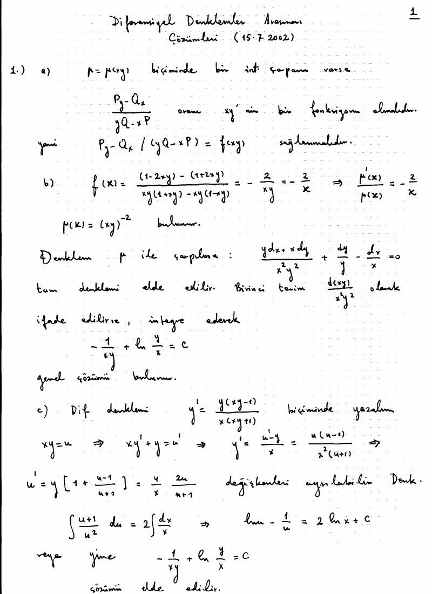
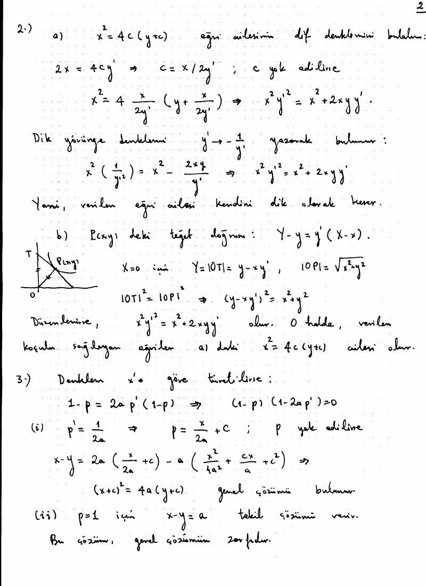
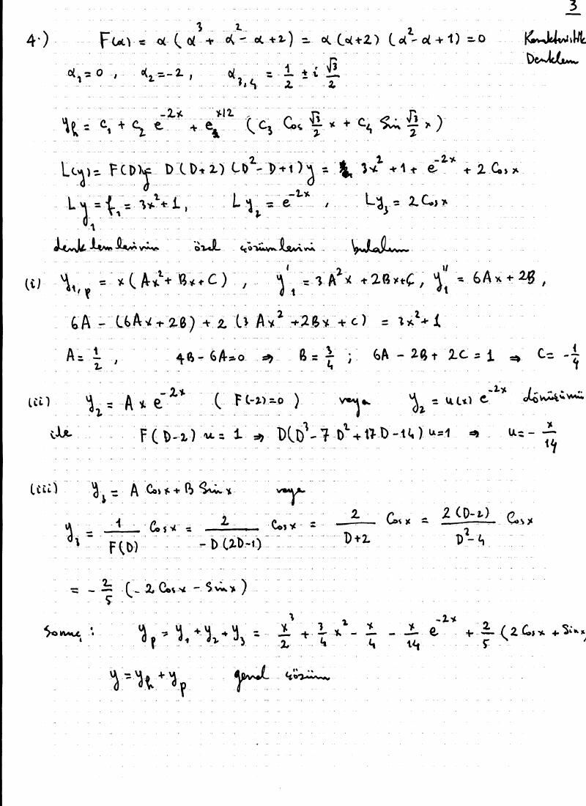
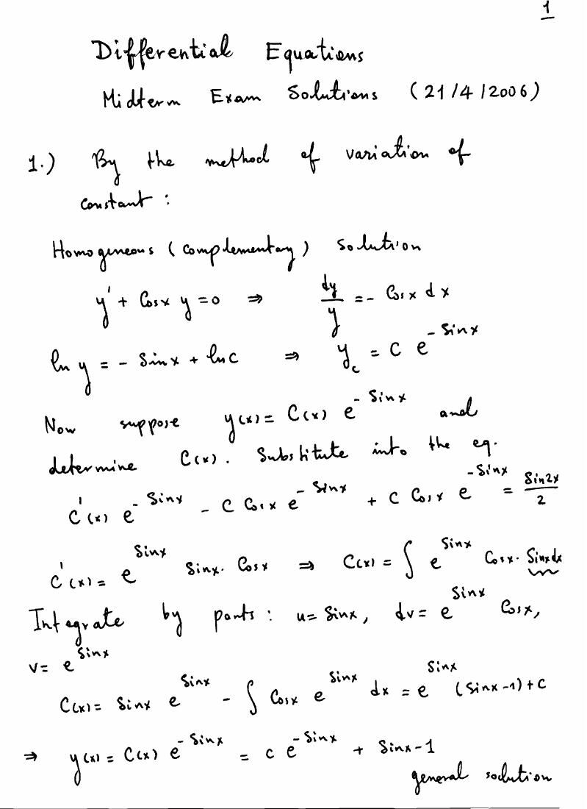
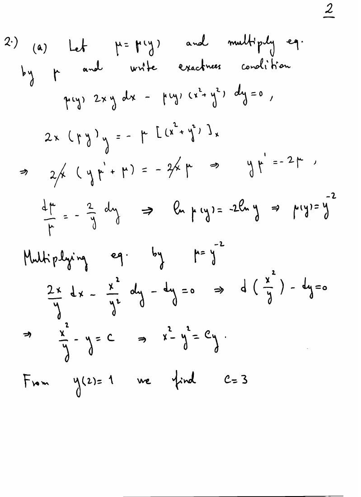
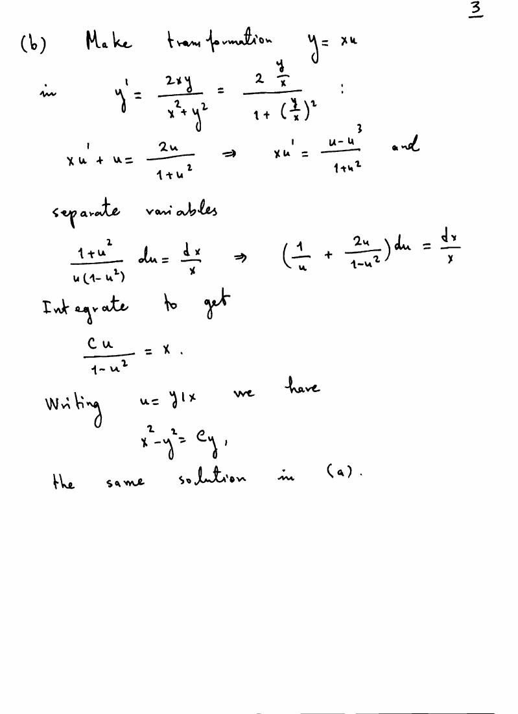
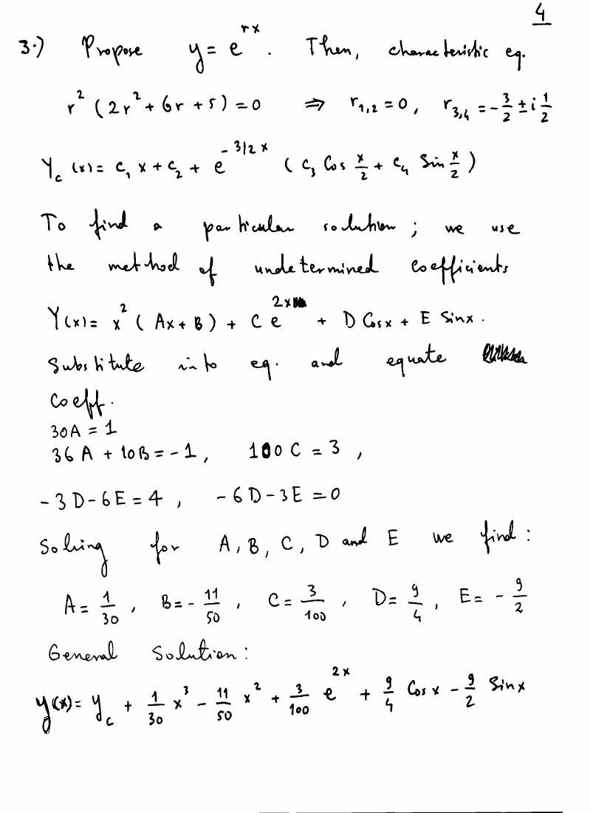
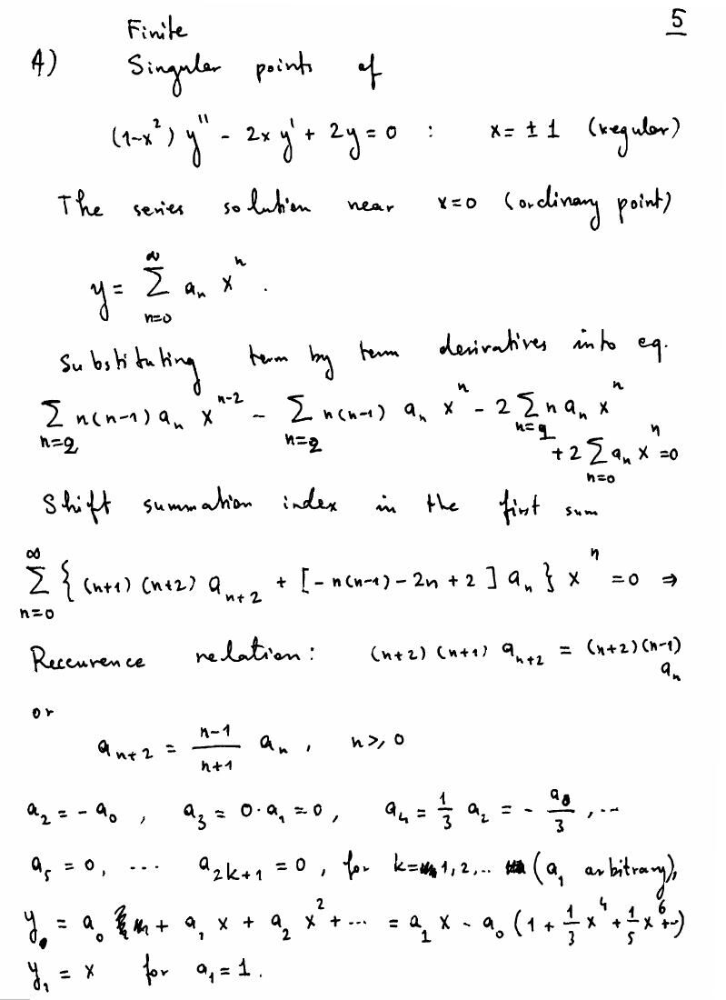
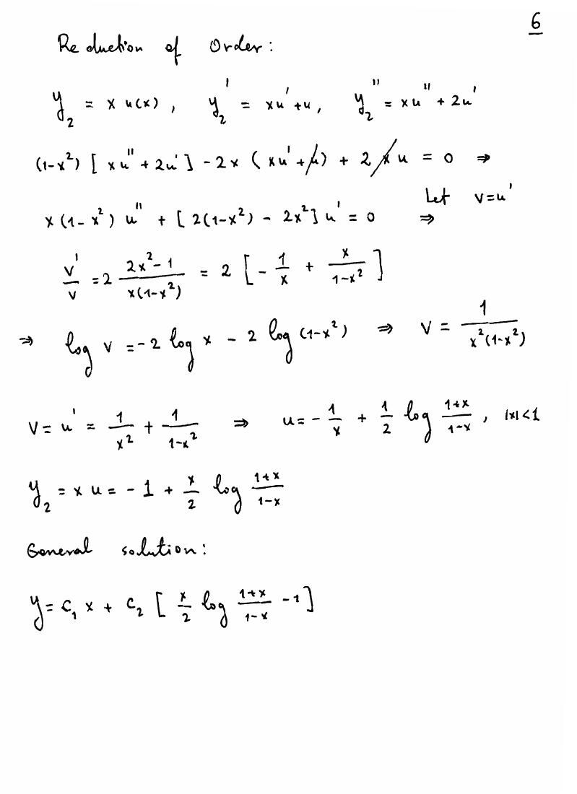

· MAT222
MAT222 Differential Equations: 1999–2006 Midterm Exams and Solutions (Institution Not Specified)
MAT222 – Diferansiyel Denklemler · 21.04.2006 · 17.10.2026
This post brings together the midterm exams of 28 April 1999, 17 July 2002, 17 April 2003, and 21 April 2006 kept in the MAT222 folder. The documents contain the phrases "Mathematics Engineering," MAT201, and MAT201E; they do not state the university or the preparer. Ege University as the source could not be verified. The questions and solution results have been transcribed into text; the handwritten solution pages are also included. The four original PDFs can be downloaded as a ZIP at the end of the post.
Note: This content belongs to a third-party source; it is shared for archival and nostalgic purposes with the source credited. It will be removed upon the request of the rights holder.
28 April 1999: Mathematics Engineering
- For the equation (3y + 2xy⁴) dx + (x²y³ − x) dy = 0, find an integrating factor of the form µ = xᵐyⁿ and one that is homogeneous of degree zero, and integrate the equation.
- Solve the equation yy″ + (y′)² + 2a²y² = 0 by order reduction, as a homogeneous equation, and by linearizing it with the transformation u = y²; compare the results.
- What must a be for the equation xy″ + 2xy′ + (x + 1/(4x))y = 0 to have a solution of the form y = xᵃe⁻ˣ? Find the general solution by order reduction and by the normal form.
- Solve the equation y‴ − 5y″ + 11y′ − 15y = eˣ(sin x + 2 cos 3x).
- Find the Frobenius solution of the equation x²y″ − (1 + 2x)xy′ + y = 0 and a second independent solution; express them in terms of elementary functions.
This one-page document has no answer key.
17 July 2002: MAT201
Integrating factor
Find the condition for the equation P dx + Q dy = 0 to have an integrating factor µ(xy). Then solve the equation (y − xy²) dx + (x + x²y) dy = 0 both with an integrating factor and with the transformation u = xy.
In the solution, the relation µ′/µ = (Pᵧ − Qₓ)/(yQ − xP) is used for z = xy. The right-hand side must depend on z only. In the given example µ = (xy)⁻² and the result is:
−1/(xy) + ln|y/x| = C.
Orthogonal trajectories and singular solution
- Determine the orthogonal trajectories of the family x² = 4c(y + c).
- Find the curves for which, at every point, the length of the segment that the tangent cuts off from the y-axis equals the distance of that point from the origin.
- With p = y′, solve the equation x − y = 2ap − ap²; interpret the singular solution geometrically.
In the solution pages, families of parabolas are obtained for the first two problems. In the third question, the general family is written as (x − C)² = 4a(y − C), and the singular line as y = x − a.
Constant-coefficient equation
Problem statement: y⁽⁴⁾ + y‴ − y″ + 2y′ = 3x² + 1 + e⁻²ˣ + 2 cos x.
Note: The handwritten solution takes the coefficient of the y″ term on the left as +1 and uses F(r) = r(r + 2)(r² − r + 1). This is not the same equation as the −y″ on the question sheet; the solution key cannot be used directly as the answer to the question.



17 April 2003: MAT201
Homogenization by translation
For the equation (x + y + 3)²y′ = 2(y + 1)², the transformations x = X − 2, y = Y − 1, and Y = XU are applied. The result in the source is:
ln(y + 1) + 2 arctan((y + 1)/(x + 2)) = C.
Written with absolute value it becomes ln|y + 1|; the regions where division is performed must be taken into account, as well as the solution y = −1.
Bernoulli equation
For x²y′ + xy + √y = 0, take u = √y. Then u′ + u/(2x) = −1/(2x²), and in the source, in the region x > 0:
y = (1 + C√x)²/x².
The condition u = √y ≥ 0 must be preserved; in addition, y = 0 is a solution.
Orthogonal trajectories
For the family x²/c + y² = 1/(c − 1), eliminating the parameter gives (y − xy′)(x + yy′) = y′. When y′ is replaced by −1/y′, the same differential equation is obtained.
Initial condition check
yy″ + (y′)² + 2y² = 0, y(0) = 1, y′(0) = 1/2.
After finding y² = A cos 2x + B sin 2x, the source writes B = 2 and y = √(cos 2x + 2 sin 2x).
Note: The equality 2y(0)y′(0) = 2B gives B = 1/2. The local solution satisfying the initial conditions is y = √(cos 2x + (1/2)sin 2x). The result in the source gives y′(0) = 2. In the earlier integral line, ln(y/C) = (1/2)cos(C₁ − 2x) is also written; the right-hand side should be (1/2)ln|cos(C₁ − 2x)|.
Third-order equation
y‴ − 3y′ + 2y = e⁻²ˣ(x + sin x).
F(r) = (r − 1)²(r + 2). The general solution in the source:
y = eˣ(C₁ + C₂x) + C₃e⁻²ˣ + e⁻²ˣ[x²/18 + 2x/27 + (−4 cos x + 3 sin x)/50].
This result was checked by substituting it along with its derivatives.
21 April 2006: MAT201E
The source is in English; the questions and solution results below retain that language.
- Find the general solution of 2y′ + 2(cos x)y = sin 2x. The solution sheet gives y = Ce^(−sin x) + sin x − 1.
- Solve 2xy − (x² + y²)y′ = 0 through (2,1), both by an integrating factor and as a homogeneous equation. The integrating factor is µ(y) = y⁻² and the result is x² − y² = 3y.
- Solve 2y⁽⁴⁾ + 6y‴ + 5y″ = x − 1 + 3e²ˣ + 4 cos x. The characteristic roots are 0 (double) and −3/2 ± i/2. The sheet gives y_h = C₁ + C₂x + e^(−3x/2)[C₃ cos(x/2) + C₄ sin(x/2)] and y_p = x³/30 − 11x²/50 + 3e²ˣ/100 + (9/4)cos x − (9/2)sin x.
- Classify the singular points of (1 − x²)y″ − 2xy′ + 2y = 0. Find a series solution at x = 0 and obtain another by reduction of order. The regular singular points are ±1; one solution is x and the other is (x/2)ln((1 + x)/(1 − x)) − 1 for |x| < 1.
Note: The coefficients in the particular solution of the third question's handwritten solution do not satisfy the equation. A substitution check gives y_p = x³/30 − 11x²/50 + 3e²ˣ/100 − (4/15)cos x − (8/15)sin x. The homogeneous solution is correct.





